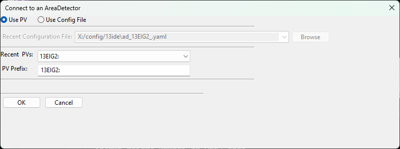
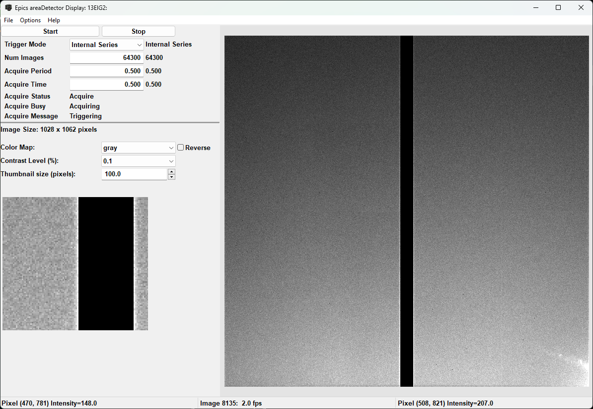

Area Detector Display¶
AreaDetector Display is a GUI Application for viewing images from an Epics areaDetector. This provides a simple set of controls for viewing the image from an areaDetector. If epicsapps -m is run after installation, a folder called Epics Apps should be placed on your desktop which as a shortcut labeled areaDetecor_Viewer which can be used to launch the application. From a command line terminal, you can also use:
epicsapps adviewer
This will start with a dialog to either select an areaDetector PV or to browse for or select an AreaDetector configuration file, which uses yaml syntax.
{kind=link}
Typing the prefix (without ‘cam1’ or ‘det1’, but with the trailing colon) for an areaDetector would then bring up an image like this:
By default there are buttons to start and stop acquisition, and controls for the Trigger Mode, number of images, exposure time, and a few messages about acquisition. It is a basic but useable interface for collecting images with the detector.
For the image display, the color lookup table can changed to a handful of supplied colortables (taken from matplotlib), and reversing that table is allowed. Contrast levels can be set using a percentage value to clip the intensity range. A value of 1 will set the displayed intensity range to be from the 1%% to 99%% intensity level of the image data. This can be a very useful option for many areaDetectors either with bad pixels or high dynamic range, as the full scale image is often unusable. The “Options” menu will allow to flip and rotate the image.
The display shows a “thumbnail image” in the lower left, with an ajustable size, in pixels. At startup, this is centered on the image, but clicking the mouse on the image will center that portion of the image in the Zoom box.
Using a configuration file¶
A configuration file can be saved from the File menu. This file can be edited to change some of the default settings such as PREFIX for the detector, displayed title, and also the list of PVs for controls. For some cameras, you may want to include a file plugin Path or other PV on this simple display. A few examples of configuration files are given at https://github.com/pyepics/epicsapps/tree/master/examples/areaDetector, with a sample example that includes the Path for the TIFF file-writing plugin lookng like this:
name: IDA Beam Viewer
prefix: '13IDAPG1:'
title: AD Display / IDA Beam Viewer
camera_attributes: [Acquire, ArrayCounter, ArrayCounter_RBV, NumImages, NumImages_RBV,
AcquireTime, AcquireTime_RBV, TriggerMode, TriggerMode_RBV]
colormaps: [gray, magma, inferno, plasma, viridis, coolwarm, hot, jet]
colormode: Mono
default_rotation: 0
epics_controls:
- [Trigger Mode, 'cam1:TriggerMode', true, pvenum, _RBV, 150, 10]
- [Image Mode, 'cam1:ImageMode', true, pvenum, _RBV, 150, 10]
- ['# Images', 'cam1:NumImages', true, pvfloat, _RBV, 100, 10]
- [Acquire Time, 'cam1:AcquireTime', true, pvfloat, _RBV, 100, 10]
- [Acquire Period, 'cam1:AcquirePeriod', true, pvfloat, _RBV, 100, 10]
- [TIFF File Path, 'TIFF1:FilePath', true, pvtctrl, false, 250, 10]
- [Acquire Status, 'cam1:Acquire', true, pvtext, false, 250, 10]
filesaver: 'TIFF1:'
free_run_time: 0.2
image_attributes: [ArrayData, UniqueId_RBV]
show_thumbnail: true
thumbnail_size: 100
use_filesaver: true
workdir: /home/user
scandb_instrument: Pinhole Tank BPM
This describes how the adviewer application will connect to the areaDetector, including which PVs to include for a very basic widget controls with a limited set of Process Variables described such as those for starting and stopping the acquisition. This configuration file will generate an interface like this:
Note that the epics_controls is a list of data for PVs to be displayed in the upper left portion of the window. From the configuration file above, note:
epics_controls:
- [Trigger Mode, 'cam1:TriggerMode', true, pvenum, _RBV, 150, 10]
- [Image Mode, 'cam1:ImageMode', true, pvenum, _RBV, 150, 10]
Each item in the epics_controls list has values of
display name, here “Trigger Mode”
Epics PV to use, here “cam1:TriggerMode”
whether to prepend the AD PV Prefix, here “13IDAPG1:” to the PV name, here “true”.
what kind of PV it is – enum, float, text, which will determine what type of widget is use, heree “pvenum”.
what suffix (if any) to use for a “readback PV”, here “_RBV”, common for many AD PVs
the size of the widget in pixels, here 150
the font size for the widget, here 10.
Finally, if an Epics ScanDB data is setup with Instruments and a postgresql database, saved positions from one or more instruments can be included in the display, for example to move a camera or shutter into saved positions.